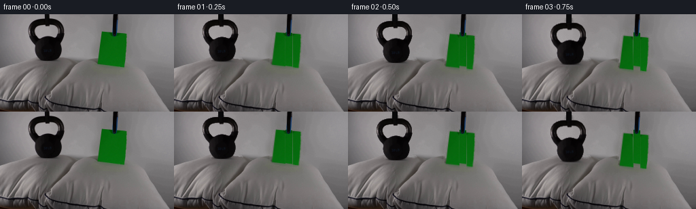
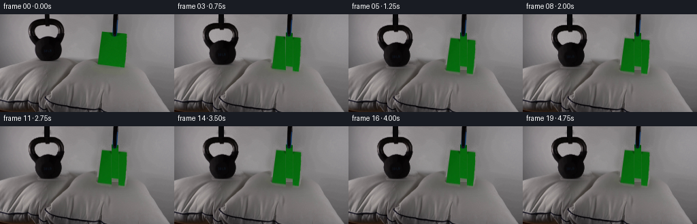
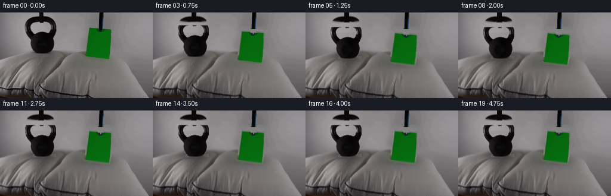
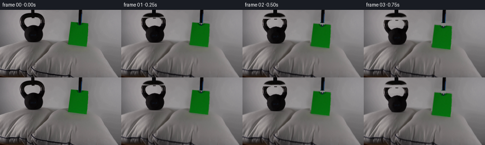

CODING AGENTS AS PIXEL WORLD MODELS
traex/DeepSeek-V4.1-Flash · 0195
点击播放 · 原生 RGB 像素
逐轮保存的候选
回放视频、检查图与代码变化。
每份候选均可单独播放。实际图片检查记录在下方工具轨迹中。
候选 01播放与检查图
点击播放 · 原生 RGB 像素


展开代码变化
--- 上一保存版本
+++ 本次保存版本
@@ -0,0 +1,315 @@
+from pathlib import Path
+
+import cv2
+import numpy as np
+from PIL import Image
+from scipy.ndimage import (
+ binary_closing,
+ binary_dilation,
+ binary_fill_holes,
+ gaussian_filter,
+ label,
+)
+
+import artifact_io
+
+
+ROOT = Path(__file__).resolve().parent
+H, W = 144, 256
+FRAME_COUNT = 20
+
+
+def smoothstep(value):
+ value = np.clip(value, 0.0, 1.0)
+ return value * value * (3.0 - 2.0 * value)
+
+
+def largest_component(mask):
+ labels, count = label(mask)
+ if count == 0:
+ return np.zeros_like(mask, dtype=bool)
+ areas = np.bincount(labels.ravel())
+ areas[0] = 0
+ return labels == int(np.argmax(areas))
+
+
+def make_layers(source):
+ rgb = source.astype(np.float32)
+ luma = rgb @ np.array([0.299, 0.587, 0.114], dtype=np.float32)
+ yy, xx = np.indices((H, W))
+
+ # The kettlebell is the connected dark mass. Its bright handle opening
+ # remains transparent, which lets the reconstructed background show through.
+ kettle_region = np.zeros((H, W), dtype=bool)
+ kettle_region[7:71, 38:100] = True
+ kettle_core = kettle_region & (luma < 102.0)
+ kettle_mask = largest_component(kettle_core)
+ kettle_mask = binary_closing(kettle_mask, iterations=1)
+ kettle_mask &= kettle_region
+
+ # The paper is isolated by its green chroma. Filling the outer contour
+ # recovers its shaded interior; the black suspension strip is added back as
+ # a separate fixed foreground element.
+ r, g, b = (rgb[:, :, channel] for channel in range(3))
+ paper_seed = (g > r + 14.0) & (g > b + 8.0) & (g > 35.0)
+ paper_seed[:20, :] = False
+ paper_seed[:, :136] = False
+ paper_seed[:, 194:] = False
+ paper_seed &= yy < 84
+
+ paper_near = largest_component(binary_dilation(paper_seed, iterations=2))
+ paper_u8 = paper_near.astype(np.uint8)
+ contours, _ = cv2.findContours(
+ paper_u8, cv2.RETR_EXTERNAL, cv2.CHAIN_APPROX_SIMPLE
+ )
+ cv2.drawContours(paper_u8, contours, -1, 1, cv2.FILLED)
+ paper_mask = paper_u8.astype(bool)
+
+ # A narrow dark support strip crosses the paper and extends above it.
+ paper_cable = np.zeros((H, W), dtype=bool)
+ paper_cable[0:82, 164:174] = True
+ paper_mask &= ~paper_cable
+
+ # Soft one-pixel edges preserve the original antialiasing without a dark
+ # fringe when the foreground moves.
+ kettle_alpha = gaussian_filter(kettle_mask.astype(np.float32), 0.48)
+ kettle_alpha = np.clip((kettle_alpha - 0.08) / 0.88, 0.0, 1.0)
+ paper_alpha = gaussian_filter(paper_mask.astype(np.float32), 0.55)
+ paper_alpha = np.clip((paper_alpha - 0.10) / 0.86, 0.0, 1.0)
+
+ # Remove both movers and the support strip from the background plate.
+ removal = binary_dilation(
+ kettle_mask | paper_mask | paper_cable, iterations=2
+ ).astype(np.uint8) * 255
+ background = cv2.inpaint(
+ np.clip(rgb, 0, 255).astype(np.uint8)[:, :, ::-1],
+ removal,
+ 4.0,
+ cv2.INPAINT_TELEA,
+ )[:, :, ::-1].astype(np.float32)
+
+ # A little fixed grain keeps the repaired backdrop from looking unnaturally
+ # smoother than the untouched parts of the source frame.
+ rng = np.random.default_rng(195)
+ grain = rng.normal(0.0, 1.65, (H, W, 1)).astype(np.float32)
+ grain_mask = gaussian_filter(removal.astype(np.float32) / 255.0, 1.0)
+ background += grain * grain_mask[:, :, None]
+ background = np.clip(background, 0, 255)
+
+ return {
+ "source": source.astype(np.float32),
+ "background": background,
+ "kettle_mask": kettle_mask,
+ "kettle_alpha": kettle_alpha,
+ "paper_mask": paper_mask,
+ "paper_alpha": paper_alpha,
+ "paper_cable": paper_cable,
+ }
+
+
+def affine_layer(image, alpha, center, angle=0.0, translate=(0.0, 0.0),
+ scale=(1.0, 1.0)):
+ matrix = cv2.getRotationMatrix2D(center, angle, 1.0)
+ matrix[0, 0] *= scale[0]
+ matrix[1, 1] *= scale[1]
+ matrix[0, 2] += translate[0]
+ matrix[1, 2] += translate[1]
+ moved = cv2.warpAffine(
+ image,
+ matrix,
+ (W, H),
+ flags=cv2.INTER_LINEAR,
+ borderMode=cv2.BORDER_CONSTANT,
+ borderValue=0,
+ )
+ moved_alpha = cv2.warpAffine(
+ alpha,
+ matrix,
+ (W, H),
+ flags=cv2.INTER_LINEAR,
+ borderMode=cv2.BORDER_CONSTANT,
+ borderValue=0,
+ )
+ return moved, np.clip(moved_alpha, 0.0, 1.0)
+
+
+def blend(base, color, alpha):
+ alpha = np.clip(alpha, 0.0, 1.0)[:, :, None]
+ return base * (1.0 - alpha) + color * alpha
+
+
+def pillow_dent(image, center, amplitude, radius_x, radius_y):
+ if amplitude <= 0.02:
+ return image
+ yy, xx = np.indices((H, W), dtype=np.float32)
+ falloff = np.exp(
+ -0.5 * ((xx - center[0]) / radius_x) ** 2
+ -0.5 * ((yy - center[1]) / radius_y) ** 2
+ )
+ map_x = xx.astype(np.float32, copy=False)
+ map_y = (yy - float(amplitude) * falloff).astype(np.float32, copy=False)
+ warped = cv2.remap(
+ image,
+ map_x,
+ map_y,
+ interpolation=cv2.INTER_LINEAR,
+ borderMode=cv2.BORDER_REFLECT_101,
+ )
+ shade = 1.0 - 0.16 * falloff[:, :, None]
+ return np.clip(warped * shade, 0, 255)
+
+
+def ellipse_alpha(center, radius_x, radius_y, blur):
+ yy, xx = np.indices((H, W), dtype=np.float32)
+ distance = ((xx - center[0]) / radius_x) ** 2 + (
+ (yy - center[1]) / radius_y
+ ) ** 2
+ alpha = np.clip(1.0 - distance, 0.0, 1.0)
+ return gaussian_filter(alpha, blur)
+
+
+def paper_motion(t):
+ # Contact is reached together at 1.25 s. The light sheet has a small,
+ # quickly damped lateral flutter and rotation after impact.
+ descent = smoothstep(t / 1.25)
+ dy = 9.5 * descent
+ if t < 1.25:
+ angle = 0.65 * np.sin(np.pi * min(t / 1.25, 1.0))
+ dx = 0.35 * np.sin(2.0 * np.pi * t / 1.25)
+ squash = 1.0
+ else:
+ tau = t - 1.25
+ envelope = np.exp(-2.8 * tau)
+ angle = -1.45 * envelope * np.sin(7.8 * tau + 0.35)
+ dx = 0.85 * envelope * np.sin(8.5 * tau)
+ dy += -0.45 * envelope * np.sin(8.0 * tau)
+ squash = 1.0 - 0.012 * envelope * abs(np.sin(8.0 * tau))
+ return dy, dx, angle, squash
+
+
+def kettle_motion(t):
+ descent = smoothstep(t / 1.25)
+ dy = 8.6 * descent
+ if t >= 1.25:
+ tau = t - 1.25
+ dy += 1.05 * np.exp(-5.5 * tau) * abs(np.sin(7.0 * tau))
+ return dy
+
+
+def draw_kettle_cable(frame, body_shift):
+ # The original support strip is widened slightly with distance from the
+ # handle and kept behind the bell's topmost edge.
+ cable_bottom = 8.0 + body_shift
+ for y in range(0, max(0, int(np.ceil(cable_bottom)))):
+ phase = y / max(cable_bottom, 1.0)
+ half_width = 3.0 + 0.55 * phase
+ left = int(np.floor(68.5 - half_width))
+ right = int(np.ceil(68.5 + half_width))
+ fade = 1.0 if y < cable_bottom - 1.0 else max(0.0, cable_bottom - y)
+ shade = np.array([8.0, 8.0, 9.0], dtype=np.float32)
+ frame[y, left:right + 1] = (
+ frame[y, left:right + 1] * (1.0 - fade) + shade * fade
+ )
+
+
+def render_frame(index, layers):
+ if index == 0:
+ return np.clip(layers["source"], 0, 255).astype(np.uint8)
+
+ t = index / 4.0
+ kettle_dy = kettle_motion(t)
+ paper_dy, paper_dx, paper_angle, paper_squash = paper_motion(t)
+
+ # The heavy bell presses farther into its cushion; the sheet barely dimples
+ # the second pillow.
+ kettle_press = 4.2 * smoothstep((t - 1.05) / 0.70)
+ paper_press = 1.55 * smoothstep((t - 1.05) / 0.70)
+ if t > 1.35:
+ tau = t - 1.35
+ kettle_press += 0.55 * np.exp(-4.5 * tau) * np.sin(8.0 * tau)
+ paper_press += 0.30 * np.exp(-5.0 * tau) * np.sin(9.0 * tau)
+
+ background = pillow_dent(
+ layers["background"], (69.0, 73.0), kettle_press, 28.0, 12.0
+ )
+ background = pillow_dent(
+ background, (166.0, 83.0), paper_press, 24.0, 8.0
+ )
+
+ # Soft ambient shadows are laid onto the cushion before the objects.
+ kettle_shadow = ellipse_alpha(
+ (69.0, 72.0 + 0.25 * kettle_dy), 31.0, 8.0, 2.4
+ )
+ kettle_shadow *= 0.30 * smoothstep((t - 0.35) / 0.9)
+ background = blend(
+ background,
+ np.array([42.0, 39.0, 38.0], dtype=np.float32),
+ kettle_shadow,
+ )
+
+ paper_shadow = ellipse_alpha(
+ (166.0, 82.0 + 0.20 * paper_dy), 24.0, 5.5, 1.9
+ )
+ paper_shadow *= 0.19 * smoothstep((t - 0.35) / 0.9)
+ background = blend(
+ background,
+ np.array([55.0, 54.0, 49.0], dtype=np.float32),
+ paper_shadow,
+ )
+
+ frame = background.copy()
+
+ # The support strip stays fixed in the camera frame and crosses the moving
+ # paper. Its texture is sampled directly from the source.
+ cable_rgb = layers["source"][0:82, 164:174]
+ cable_alpha = layers["paper_cable"][0:82, 164:174].astype(np.float32)
+ frame[0:82, 164:174] = (
+ frame[0:82, 164:174] * (1.0 - cable_alpha[:, :, None])
+ + cable_rgb * cable_alpha[:, :, None]
+ )
+
+ kettle_rgb, kettle_alpha = affine_layer(
+ layers["source"],
+ layers["kettle_alpha"],
+ (69.0, 38.0),
+ angle=0.0,
+ translate=(0.0, kettle_dy),
+ )
+ kettle_rgb *= kettle_alpha[:, :, None]
+ frame = frame * (1.0 - kettle_alpha[:, :, None]) + kettle_rgb
+ draw_kettle_cable(frame, kettle_dy)
+
+ paper_rgb, paper_alpha = affine_layer(
+ layers["source"],
+ layers["paper_alpha"],
+ (165.5, 52.0),
+ angle=paper_angle,
+ translate=(paper_dx, paper_dy),
+ scale=(1.0, paper_squash),
+ )
+ paper_rgb *= paper_alpha[:, :, None]
+ frame = frame * (1.0 - paper_alpha[:, :, None]) + paper_rgb
+
+ # Restore the fixed cable over the paper after its transform.
+ frame[0:82, 164:174] = (
+ frame[0:82, 164:174] * (1.0 - cable_alpha[:, :, None])
+ + cable_rgb * cable_alpha[:, :, None]
+ )
+
+ return np.clip(np.rint(frame), 0, 255).astype(np.uint8)
+
+
+def main():
+ source = np.array(Image.open(ROOT / "first_frame.png").convert("RGB"))
+ if source.shape != (H, W, 3):
+ raise ValueError(f"Expected 144x256 RGB first frame, got {source.shape}")
+
+ layers = make_layers(source)
+ frames = np.stack(
+ [render_frame(index, layers) for index in range(FRAME_COUNT)], axis=0
+ )
+ artifact_io.save(frames, ROOT)
+
+
+if __name__ == "__main__":
+ main()
候选 02播放与检查图
点击播放 · 原生 RGB 像素

展开代码变化
--- 上一保存版本
+++ 本次保存版本
@@ -41,11 +41,28 @@
# The kettlebell is the connected dark mass. Its bright handle opening
# remains transparent, which lets the reconstructed background show through.
kettle_region = np.zeros((H, W), dtype=bool)
- kettle_region[7:71, 38:100] = True
+ kettle_region[7:70, 38:94] = True
kettle_core = kettle_region & (luma < 102.0)
- kettle_mask = largest_component(kettle_core)
- kettle_mask = binary_closing(kettle_mask, iterations=1)
- kettle_mask &= kettle_region
+ kettle_core = largest_component(kettle_core)
+ kettle_core = binary_closing(kettle_core, iterations=1)
+ kettle_core &= kettle_region
+
+ # Fill the bell body, but retain its open handle as real transparency.
+ core_u8 = kettle_core.astype(np.uint8)
+ contours, _ = cv2.findContours(
+ core_u8, cv2.RETR_EXTERNAL, cv2.CHAIN_APPROX_SIMPLE
+ )
+ kettle_outer = np.zeros_like(core_u8)
+ cv2.drawContours(kettle_outer, contours, -1, 1, cv2.FILLED)
+ holes = kettle_outer.astype(bool) & ~kettle_core
+ hole_labels, hole_count = label(holes)
+ kettle_mask = kettle_outer.astype(bool)
+ for component in range(1, hole_count + 1):
+ hole = hole_labels == component
+ if hole.sum() > 100:
+ kettle_mask &= ~hole
+ kettle_mask[:16, :] = False
+ kettle_mask[68:, 40:48] = False
# The paper is isolated by its green chroma. Filling the outer contour
# recovers its shaded interior; the black suspension strip is added back as
候选 03播放与检查图
候选 04播放与检查图
点击播放 · 原生 RGB 像素


展开代码变化
--- 上一保存版本
+++ 本次保存版本
@@ -84,7 +84,7 @@
# A narrow dark support strip crosses the paper and extends above it.
paper_cable = np.zeros((H, W), dtype=bool)
- paper_cable[0:82, 164:174] = True
+ paper_cable[0:28, 164:174] = True
paper_mask &= ~paper_cable
# Soft one-pixel edges preserve the original antialiasing without a dark
@@ -95,21 +95,18 @@
paper_alpha = np.clip((paper_alpha - 0.10) / 0.86, 0.0, 1.0)
# Remove both movers and the support strip from the background plate.
- removal = binary_dilation(
- kettle_mask | paper_mask | paper_cable, iterations=2
- ).astype(np.uint8) * 255
- background = cv2.inpaint(
- np.clip(rgb, 0, 255).astype(np.uint8)[:, :, ::-1],
- removal,
- 4.0,
- cv2.INPAINT_TELEA,
- )[:, :, ::-1].astype(np.float32)
+ kettle_outer = np.zeros((H, W), dtype=bool)
+ kettle_outer[16:70, 42:94] = True
+ kettle_outer &= binary_fill_holes(kettle_mask)
+ removal_mask = kettle_outer | paper_mask | paper_cable
+ removal = binary_dilation(removal_mask, iterations=2)
+ background = row_fill(rgb, removal)
# A little fixed grain keeps the repaired backdrop from looking unnaturally
# smoother than the untouched parts of the source frame.
rng = np.random.default_rng(195)
grain = rng.normal(0.0, 1.65, (H, W, 1)).astype(np.float32)
- grain_mask = gaussian_filter(removal.astype(np.float32) / 255.0, 1.0)
+ grain_mask = gaussian_filter(removal.astype(np.float32), 1.0)
background += grain * grain_mask[:, :, None]
background = np.clip(background, 0, 255)
@@ -122,6 +119,44 @@
"paper_alpha": paper_alpha,
"paper_cable": paper_cable,
}
+
+
+def row_fill(image, mask):
+ """Reconstruct a hidden region from its left/right surroundings."""
+ result = image.copy()
+ for y in range(H):
+ row_mask = mask[y]
+ x = 0
+ while x < W:
+ if not row_mask[x]:
+ x += 1
+ continue
+ start = x
+ while x + 1 < W and row_mask[x + 1]:
+ x += 1
+ end = x
+ left = start - 1
+ right = end + 1
+ if left >= 0 and right < W:
+ left_color = result[y, left]
+ right_color = result[y, right]
+ t = np.linspace(
+ 0.0, 1.0, end - start + 1, dtype=np.float32
+ )[:, None]
+ result[y, start:end + 1] = (
+ left_color[None, :] * (1.0 - t)
+ + right_color[None, :] * t
+ )
+ elif left >= 0:
+ result[y, start:end + 1] = result[y, left]
+ elif right < W:
+ result[y, start:end + 1] = result[y, right]
+ x += 1
+
+ # A light vertical blur removes the one-pixel horizontal interpolation
+ # seams while retaining the pillow's broad shading.
+ result = cv2.GaussianBlur(result, (1, 3), 0)
+ return result
def affine_layer(image, alpha, center, angle=0.0, translate=(0.0, 0.0),
可观测工具轨迹
实际执行的命令与返回图片。
命令 1exit 0
/bin/bash -c "pwd && rg --files -g '"'!*.mp4'"' -g '"'!*.mov'"' | sort"
命令 2exit 0
/bin/bash -c "sed -n '1,240p' prompt.txt"
命令 3exit 0
/bin/bash -c "sed -n '1,280p' GENERATION_RULES.md"
命令 4exit 0
/bin/bash -c "find . -maxdepth 2 -type f -printf '%p %s bytes\\n' | sort"
命令 5exit 127
/bin/bash -c "file first_frame.png && identify -verbose first_frame.png | sed -n '1,120p'"
命令 6exit 0
/bin/bash -c "sed -n '1,260p' artifact_io.py"
命令 7exit 0
/bin/bash -c "sed -n '1,240p' player_template.html"
命令 8exit 0
/bin/bash -c "python - <<'PY'
from PIL import Image
import numpy as np
im=np.array(Image.open('first_frame.png').convert('RGB'))
print(im.shape, im.dtype, im.min(), im.max(), im.mean(axis=(0,1)))
# top colors exact and quantized
for q in [1,8,16,32]:
a=(im//q)*q
c,n=np.unique(a.reshape(-1,3),axis=0,return_counts=True)
idx=np.argsort(n)[-20:][::-1]
print('q',q,'colors',len(c))
for i in idx: print(tuple(c[i]), int(n[i]), round(n[i]/a.shape[0]/a.shape[1],3))
# mean color per 16x9 tile (32x16 tiles)
h,w=im.shape[:2]; th,tw=9,16
for y in range(0,h,th):
row=[]
for x in range(0,w,tw):
p=im[y:y+th,x:x+tw]
row.append('%02x%02x%02x'%tuple(p.mean((0,1)).astype(int)))
print(f'{y:3d}', ' '.join(row))
PY"命令 9exit 0
/bin/bash -c "python - <<'PY'
from PIL import Image
import numpy as np
im=np.array(Image.open('first_frame.png').convert('RGB')).astype(int)
h,w,_=im.shape
# 2x2 mean grid, print classes based on color
for bs in [4]:
print('CELLS',w//bs,h//bs)
for y in range(0,h,bs):
s=''
for x in range(0,w,bs):
p=im[y:y+bs,x:x+bs].reshape(-1,3).mean(0); r,g,b=p
mx=max(p); mn=min(p); sat=mx-mn
if g>r*1.35 and g>b*1.25 and g>45: c='G'
elif mx<30: c='#'
elif mx<55: c='D'
elif mx<80: c='d'
elif r>g+8 and g>=b-3: c='R'
elif g>r+5 and g>b+3: c='g'
elif mx>150: c='W'
elif mx>130: c='o'
elif mx>110: c='O'
elif mx>90: c='-'
elif mx>70: c='.'
else: c=','
s+=c
print(f'{y:03d} {s}')
PY"命令 10exit 0
/bin/bash -c "python - <<'PY'
from PIL import Image
import numpy as np
im=np.array(Image.open('first_frame.png').convert('RGB'))
# report exact pixel row extents for green based thresholds
r,g,b=[im[:,:,i].astype(int) for i in range(3)]
mask=(g>r*1.25)&(g>b*1.15)&(g>38)
ys,xs=np.where(mask)
print('green bounds',xs.min(),xs.max(),ys.min(),ys.max(),len(xs))
for y in range(20,84,4):
xx=np.where(mask[y])[0]
if len(xx): print(y,xx.min(),xx.max(),len(xx), im[y,xx.min()],im[y,xx.max()])
# darkest mask in upper half bounds
mx=im.max(2); mn=im.min(2); sat=mx-mn
mask2=(mx<55)&(np.indices(mx.shape)[0]<80)
ys,xs=np.where(mask2);print('dark',xs.min(),xs.max(),ys.min(),ys.max(),len(xs))
for y in range(0,80,4):
xx=np.where(mask2[y])[0]
if len(xx): print(y,xx.min(),xx.max(),len(xx))
PY"命令 11exit 0
/bin/bash -c "python - <<'PY'
from PIL import Image
import numpy as np
im=np.array(Image.open('first_frame.png').convert('RGB')).astype(int)
h,w,_=im.shape
# 2x2 classify with ANSI? produce grayscale chars
chars=' .:-=+*#%@'
for y in range(0,h,2):
s=''
for x in range(0,w,2):
p=im[y:y+2,x:x+2].reshape(-1,3).mean(0); r,g,b=p
mx=max(p); mn=min(p); sat=mx-mn
if g>r*1.25 and g>b*1.15 and g>38: c='G'
elif mx<25: c='K'
elif r>g+8 and g>=b-3: c='R'
else:
lum=int(.299*r+.587*g+.114*b); c=chars[min(9,lum*10//256)]
s+=c
print(s)
PY"命令 12exit 0
/bin/bash -c "python - <<'PY'
from PIL import Image
import numpy as np
im=np.array(Image.open('first_frame.png').convert('RGB')).astype(float)
# Sobel edges
lum=im@np.array([.299,.587,.114])
gx=np.zeros_like(lum); gy=np.zeros_like(lum)
gx[:,1:-1]=lum[:,2:]-lum[:,:-2]; gy[1:-1]=lum[2:]-lum[:-2]
mag=np.hypot(gx,gy)
# strongest horizontal edges by row and vertical edges by col
print('rows')
for y in np.argsort(mag.mean(1))[-25:][::-1]: print(y,round(mag[y].mean(),1),round(lum[y].mean(),1))
print('cols')
for x in np.argsort(mag.mean(0))[-25:][::-1]: print(x,round(mag[:,x].mean(),1),round(lum[:,x].mean(),1))
PY"命令 13exit 0
/bin/bash -c "python - <<'PY'
from PIL import Image
import numpy as np
im=np.array(Image.open('first_frame.png').convert('RGB')).astype(int)
for y in [0,8,15,16,20,24,28,32,36,40,44,48,52,56,60,64,68,72,76,80,90,100,110,120,126,128,132,136,140,143]:
print('\\ny',y)
# print runs of means every 8 x with color
for x in range(0,256,8):
p=im[y:min(y+2,144),x:x+8].reshape(-1,3).mean(0).astype(int)
print(f'{x:03d}:{p[0]:03d},{p[1]:03d},{p[2]:03d}',end=' ')
if x%64==56: print()
PY"命令 14exit 0
/bin/bash -c "python - <<'PY'
from PIL import Image
import numpy as np
from scipy.ndimage import label, find_objects
im=np.array(Image.open('first_frame.png').convert('RGB')).astype(int)
r,g,b=[im[:,:,i] for i in range(3)]
masks={
'green':(g>r+20)&(g>b+12)&(g>35),
'dark':(im.max(2)<60),
'verydark':(im.max(2)<30),
'redbrown':(r>g+10)&(r>b+10),
'light':(im.min(2)>145),
}
for name,m in masks.items():
lab,n=label(m)
print('\\n',name,'total',m.sum(),'components',n)
for i,sl in sorted(enumerate(find_objects(lab),1), key=lambda z: 0 if z[1] is None else -(z[1][0].stop-z[1][0].start)*(z[1][1].stop-z[1][1].start))[:20]:
if sl is None: continue
area=(lab[sl]==i).sum()
y0,y1=sl[0].start,sl[0].stop; x0,x1=sl[1].start,sl[1].stop
if area>10: print(area,(x0,x1,y0,y1))
PY"命令 15exit 0
/bin/bash -c "python - <<'PY'
from PIL import Image
import numpy as np
im=np.array(Image.open('first_frame.png').convert('RGB')).astype(int)
# downsample with labels by semantic-ish colors, print bounding connected object shapes using blocks 2x4 etc
# coordinates where green spans
r,g,b=[im[:,:,i] for i in range(3)]
gm=(g>r+20)&(g>b+12)&(g>35)
dm=(im.max(2)<60)
for y in range(0,90):
gx=np.where(gm[y])[0]; dx=np.where(dm[y])[0]
if y%2==0:
print(f'{y:02d} G {gx.min() if len(gx) else \"-\":>3} {gx.max() if len(gx) else \"-\":>3} n{len(gx):>2} | D {dx.min() if len(dx) else \"-\":>3} {dx.max() if len(dx) else \"-\":>3} n{len(dx):>2}')
PY"命令 16exit 0
/bin/bash -c "python - <<'PY'
from PIL import Image
im=Image.open('first_frame.png')
print(im.info)
print(im.getexif())
PY"命令 17exit 0
/bin/bash -c "python - <<'PY'
from PIL import Image
import numpy as np
im=np.array(Image.open('first_frame.png').convert('RGB')).astype(np.float32)
# inspect background underneath around target pillow regions, sampling horizontal strips
for name,(x0,x1,y0,y1) in {'leftpillow':(25,130,68,125),'rightpillow':(135,230,78,125),'leftfloor':(30,120,126,143),'rightfloor':(145,235,126,143)}.items():
p=im[y0:y1,x0:x1]
print(name,'mean',p.mean((0,1)),'median',np.median(p.reshape(-1,3),0),'std',p.std((0,1)))
PY"命令 18exit 0
/bin/bash -c "python - <<'PY'
from PIL import Image
import numpy as np
im=np.array(Image.open('first_frame.png').convert('RGB')).astype(int)
# print 4x4 block mean map with coordinate every row and selected cols compact chars
chars=' .:-=+*#%@'
for y in range(0,144,4):
s=''
for x in range(0,256,4):
p=im[y:y+4,x:x+4].reshape(-1,3).mean(0)
r,g,b=p
if g>r+15 and g>b+10: c='G'
elif r>g+8 and r>b+8: c='R'
else:
l=int(.299*r+.587*g+.114*b); c=chars[min(9,l*10//256)]
s+=c
print(f'{y:03d} {s}')
PY"命令 19exit 0
/bin/bash -c "python - <<'PY'
from PIL import Image
import numpy as np
im=np.array(Image.open('first_frame.png').convert('RGB')).astype(float)
# Evaluate backgrounds and pillow top: row-wise median of regions
for y in range(64,144,4):
vals=[]
for a,b in [(20,140),(135,235)]:
p=im[y,a:b]
vals.append(tuple(np.median(p,axis=0).astype(int)))
print(y,vals)
PY"命令 20exit 0
/bin/bash -c "python - <<'PY'
from PIL import Image
import numpy as np
im=np.array(Image.open('first_frame.png').convert('RGB')).astype(float)
chars=' .:-=+*#%@'
for y in range(0,76,1):
s=''
for x in range(32,104,1):
p=im[y,x]; l=.299*p[0]+.587*p[1]+.114*p[2]
s+=chars[min(9,int(l)*10//256)]
print(f'{y:02d} {s}')
PY"命令 21exit 0
/bin/bash -c "python - <<'PY'
from PIL import Image
import numpy as np
im=np.array(Image.open('first_frame.png').convert('RGB')).astype(float)
chars=' .:-=+*#%@'
for y in range(0,84,1):
s=''
for x in range(136,194,1):
p=im[y,x]; l=.299*p[0]+.587*p[1]+.114*p[2]
s+=chars[min(9,int(l)*10//256)]
print(f'{y:02d} {s}')
PY"命令 22exit 1
/bin/bash -c "python - <<'PY'
from PIL import Image
import numpy as np
im=np.array(Image.open('first_frame.png').convert('RGB')).astype(float)
chars=' .:-=+*#%@'
for y in range(118,144,1):
s=''
for x in range(0,256,2):
p=im[y:y+1,x:x+2].mean(0); l=.299*p[0]+.587*p[1]+.114*p[2]
s+=chars[min(9,int(l)*10//256)]
print(f'{y:03d} {s}')
PY"命令 23exit 0
/bin/bash -c "python - <<'PY'
from PIL import Image
import numpy as np
im=np.array(Image.open('first_frame.png').convert('RGB')).astype(float)
chars=' .:-=+*#%@'
for y in range(118,144,1):
s=''
for x in range(0,256,2):
p=im[y:y+1,x:x+2].mean(0).reshape(-1); l=.299*p[0]+.587*p[1]+.114*p[2]
s+=chars[min(9,int(l)*10//256)]
print(f'{y:03d} {s}')
PY"命令 24exit 0
/bin/bash -c "python - <<'PY'
from PIL import Image
import numpy as np
im=np.array(Image.open('first_frame.png').convert('RGB'))
# vertical cross sections through left object x=70 and right x=165, and pillow x=60, x=200
for x in [35,45,60,70,85,95,120,145,165,185,200,220]:
print('\\nx',x)
for y in range(0,144,4):
print(f'{y:03d}:%02x%02x%02x'%tuple(im[y,x]),end=' ')
print()
PY"命令 25exit 0
/bin/bash -c "python - <<'PY'
from PIL import Image
import numpy as np
im=np.array(Image.open('first_frame.png').convert('RGB')).astype(int)
# runs of thresholds in upper half per selected row
def runs(v):
out=[]; s=None
for i,z in enumerate(v):
if z and s is None:s=i
if not z and s is not None:out.append((s,i-1));s=None
if s is not None:out.append((s,len(v)-1))
return out
for y in range(0,84,2):
p=im[y]; lum=p@np.array([.299,.587,.114]); sat=p.max(1)-p.min(1)
masks={
'K':lum<35,
'd':lum<65,
'G':(p[:,1]>p[:,0]+18)&(p[:,1]>p[:,2]+10)&(p[:,1]>35),
'L':lum>145,
}
ss=[]
for k,m in masks.items():
rr=[r for r in runs(m) if r[1]-r[0]>=2]
if rr: ss.append(k+str(rr[:5]))
print(f'{y:02d}', ' '.join(ss))
PY"命令 26exit 0
/bin/bash -c "python - <<'PY'
from PIL import Image
import numpy as np
im=np.array(Image.open('first_frame.png').convert('RGB')).astype(float)
chars=' .:-=+*#%@'
for y in range(0,84,2):
s=''
for x in range(132,202,2):
p=im[y,x]; l=.299*p[0]+.587*p[1]+.114*p[2]
if p[1]>p[0]+18 and p[1]>p[2]+10 and p[1]>35: c='G'
else:c=chars[min(9,int(l)*10//256)]
s+=c
print(f'{y:02d} {s}')
PY"命令 27exit 0
/bin/bash -c "python - <<'PY'
from PIL import Image
import numpy as np
im=np.array(Image.open('first_frame.png').convert('RGB')).astype(float)
chars=' .:-=+*#%@'
for y in range(0,72,2):
s=''
for x in range(28,108,1):
p=im[y,x]; l=.299*p[0]+.587*p[1]+.114*p[2]
if p.max()<30:c='K'
elif l<55:c='D'
else:c=chars[min(9,int(l)*10//256)]
s+=c
print(f'{y:02d} {s}')
PY"命令 28exit 0
/bin/bash -c "python - <<'PY'
try:
import cv2; print('cv2',cv2.__version__)
except Exception as e: print('no cv2',e)
try:
import scipy; print('scipy',scipy.__version__)
except Exception as e: print('no scipy',e)
PY"命令 29exit 0
/bin/bash -c "python - <<'PY'
import cv2
from PIL import Image
import numpy as np
im=np.array(Image.open('first_frame.png').convert('RGB'))
# try inpainting object regions into background, cv2 inpaint needs BGR, mask dilate
for name,(x0,x1,y0,y1) in {'left':(35,100,0,73),'right':(138,192,22,82)}.items():
mask=np.zeros(im.shape[:2],np.uint8);mask[y0:y1,x0:x1]=255
out=cv2.inpaint(im[:,:,::-1],mask,3,cv2.INPAINT_TELEA)[:,:,::-1]
Image.fromarray(out).save(f'.tmp/{name}_inpaint.png')
PY"命令 30exit 0
/bin/bash -c "python - <<'PY'
from PIL import Image
import numpy as np
im=np.array(Image.open('first_frame.png').convert('RGB')).astype(int)
for y in range(20,84):
p=im[y,138:194]
# classify object vs bg by compare to row interpolation? print values x140:190 every 2
if y<34 or y%4==0:
print('\\ny',y)
for x in range(140,192,2):
print(f'{x}:{p[x-138,0]:3},{p[x-138,1]:3},{p[x-138,2]:3}',end=' ')
print()
PY"命令 31exit 0
/bin/bash -c "python - <<'PY'
import cv2, numpy as np
from PIL import Image
from scipy.ndimage import binary_dilation, binary_fill_holes, label
im=np.array(Image.open('first_frame.png').convert('RGB'))
lum=im@np.array([.299,.587,.114])
# kettlebell candidate
region=np.zeros(lum.shape,bool); region[0:74,38:100]=1
m=(lum<88)®ion
# label largest component around object
lab,n=label(m)
ids,counts=np.unique(lab[m],return_counts=True)
print('k comps',[(int(i),int(c)) for i,c in sorted(zip(ids,counts),key=lambda z:-z[1])[:8]])
i=ids[np.argmax(counts)]
km=lab==i
print('k bounds',np.where(km)[1].min(),np.where(km)[1].max(),np.where(km)[0].min(),np.where(km)[0].max(),km.sum())
# green candidate
r,g,b=[im[:,:,i].astype(int) for i in range(3)]
gm=(g>r+14)&(g>b+8)&(g>35)
# include string dark x164:174 y0:35
dark=(lum<75)
strm=np.zeros_like(gm);strm[0:36,164:174]=1
cand=(gm|(dark&strm))
# restricted region
cand &= np.indices(gm.shape)[0]<84
cand[:, :138]=0;cand[:,194:]=0
lab,n=label(binary_dilation(cand,iterations=1))
ids,counts=np.unique(lab[cand],return_counts=True)
i=ids[np.argmax(counts)]
# pick comps adjacent largest? include all seed comps? show
print('g comps',[(int(i),int(c)) for i,c in sorted(zip(ids,counts),key=lambda z:-z[1])[:8]])
gm2=(lab==i)|cand
print('g bounds',np.where(gm2)[1].min(),np.where(gm2)[1].max(),np.where(gm2)[0].min(),np.where(gm2)[0].max(),gm2.sum())
# row bounds for green mask every 4
for y in range(0,84,4):
xs=np.where(gm2[y])[0]
if len(xs): print('g',y,xs.min(),xs.max(),len(xs))
PY"命令 32exit 0
/bin/bash -c "python - <<'PY'
import cv2, numpy as np
from PIL import Image
from scipy.ndimage import binary_dilation, label
im=np.array(Image.open('first_frame.png').convert('RGB'))
lum=im@np.array([.299,.587,.114])
r,g,b=[im[:,:,i].astype(int) for i in range(3)]
region=np.zeros(lum.shape,bool);region[0:84,138:194]=1
gm=(g>r+14)&(g>b+8)&(g>35)
dark=lum<100
cand=region&(gm|(dark&(np.indices(lum.shape)[1]>=164)&(np.indices(lum.shape)[1]<174)&(np.indices(lum.shape)[0]<36)))
lab,n=label(binary_dilation(cand,iterations=1))
ids,counts=np.unique(lab[cand],return_counts=True)
i=ids[np.argmax(counts)]
gm2=(lab==i)
for y in range(0,84):
xs=np.where(gm2[y])[0]
if len(xs): print(f'{y:02d}',xs.min(),xs.max(),len(xs))
PY"命令 33exit 1
/bin/bash -c "python - <<'PY'
import cv2,numpy as np
from PIL import Image
from scipy.ndimage import binary_dilation,label
im=np.array(Image.open('first_frame.png').convert('RGB'))
lum=im@np.array([.299,.587,.114])
region=np.zeros(lum.shape,bool);region[0:84,138:194]=1
r,g,b=[im[:,:,i].astype(int) for i in range(3)]
cand=region&((g>r+14)&(g>b+8)&(g>35))
# use largest dilated comp and then fill
lab,n=label(binary_dilation(cand,iterations=2))
ids,counts=np.unique(lab[cand],return_counts=True); i=ids[np.argmax(counts)]
gm=(lab==i);gm[:20,164:174]=0 # avoid string
# fill holes horizontally/vertically using cv2 contour
contours,_=cv2.findContours(gm.astype(np.uint8),cv2.RETR_EXTERNAL,cv2.CHAIN_APPROX_SIMPLE)
cv2.drawContours(gm,contours,-1,1,cv2.FILLED)
print(gm.sum(),np.where(gm)[1].min(),np.where(gm)[1].max(),np.where(gm)[0].min(),np.where(gm)[0].max())
# bounding silhouette spans
for y in range(20,84):
xs=np.where(gm[y])[0]
if len(xs): print(f'{y:02d}',xs.min(),xs.max(),len(xs))
PY"命令 34exit 0
/bin/bash -c "python - <<'PY'
import cv2,numpy as np
from PIL import Image
from scipy.ndimage import binary_dilation,label
im=np.array(Image.open('first_frame.png').convert('RGB'))
lum=im@np.array([.299,.587,.114])
region=np.zeros(lum.shape,bool);region[0:84,138:194]=1
r,g,b=[im[:,:,i].astype(int) for i in range(3)]
cand=region&((g>r+14)&(g>b+8)&(g>35))
lab,n=label(binary_dilation(cand,iterations=2))
ids,counts=np.unique(lab[cand],return_counts=True); i=ids[np.argmax(counts)]
gm=(lab==i).astype(np.uint8);gm[:20,164:174]=0
contours,_=cv2.findContours(gm,cv2.RETR_EXTERNAL,cv2.CHAIN_APPROX_SIMPLE)
cv2.drawContours(gm,contours,-1,1,cv2.FILLED)
print(gm.sum(),np.where(gm)[1].min(),np.where(gm)[1].max(),np.where(gm)[0].min(),np.where(gm)[0].max())
for y in range(20,84):
xs=np.where(gm[y])[0]
if len(xs): print(f'{y:02d}',xs.min(),xs.max(),len(xs))
PY"命令 35exit 1
/bin/bash -c 'python generate.py'
命令 36exit 0
/bin/bash -c "python - <<'PY'
import numpy as np,cv2
im=np.zeros((144,256,3),np.float32);yy,xx=np.indices((144,256),dtype=np.float32)
print(xx.dtype,xx.flags.c_contiguous,yy.dtype)
try: cv2.remap(im,xx,yy,cv2.INTER_LINEAR)
except Exception as e: print(e)
try: cv2.remap(im,xx.astype(np.float32),yy.astype(np.float32),cv2.INTER_LINEAR);print('cast ok')
except Exception as e: print('cast',e)
PY"命令 37exit 0
/bin/bash -c "python - <<'PY'
import generate
from PIL import Image
import numpy as np
im=np.array(Image.open('first_frame.png').convert('RGB'))
L=generate.make_layers(im)
b=L['background']
print(b.shape,b.dtype,b.flags.c_contiguous)
print(generate.pillow_dent(b,(69,73),1,28,12).shape)
PY"命令 38exit 0
/bin/bash -c "python - <<'PY'
import generate
from PIL import Image
import numpy as np
im=np.array(Image.open('first_frame.png').convert('RGB'))
L=generate.make_layers(im)
for i in range(20):
try:
f=generate.render_frame(i,L); print(i,f.shape,f.dtype,f.min(),f.max())
except Exception as e:
print('ERR',i,repr(e));break
PY"命令 39exit 0
/bin/bash -c "python - <<'PY'
import generate
from PIL import Image
import numpy as np
im=np.array(Image.open('first_frame.png').convert('RGB'))
L=generate.make_layers(im)
for i in range(5,20):
t=i/4
kp=4.2*generate.smoothstep((t-1.05)/.7)
if t>1.35:
tau=t-1.35;kp+=.55*np.exp(-4.5*tau)*np.sin(8*tau)
pp=1.55*generate.smoothstep((t-1.05)/.7)
if t>1.35:
tau=t-1.35;pp+=.30*np.exp(-5*tau)*np.sin(9*tau)
print(i,t,kp,pp)
PY"命令 40exit 0
/bin/bash -c "python - <<'PY'
import generate,cv2
from PIL import Image
import numpy as np
im=np.array(Image.open('first_frame.png').convert('RGB'))
L=generate.make_layers(im)
b=L['background']
yy,xx=np.indices((144,256),dtype=np.float32)
for a in [0.83,3.23,4.19]:
f=np.exp(-.5*((xx-69)/28)**2-.5*((yy-73)/12)**2)
mx=xx.astype(np.float32).copy();my=(yy-a*f).astype(np.float32)
print(a,mx.dtype,my.dtype,mx.shape,mx.flags.c_contiguous,my.flags.c_contiguous)
try:
z=cv2.remap(b,mx,my,interpolation=cv2.INTER_LINEAR,borderMode=cv2.BORDER_REFLECT_101)
print('ok',z.shape)
except Exception as e: print(e)
PY"命令 41exit 0
/bin/bash -c "python - <<'PY'
import generate
from PIL import Image
import numpy as np
im=np.array(Image.open('first_frame.png').convert('RGB'))
L=generate.make_layers(im)
for i in range(5,20):
try:
f=generate.render_frame(i,L); print(i,'ok')
except Exception as e:
import traceback;traceback.print_exc();break
PY"命令 42exit 0
/bin/bash -c "nl -ba generate.py | sed -n '138,162p'; python - <<'PY' import generate import inspect print(inspect.getsource(generate.pillow_dent)) PY"
命令 43exit 0
/bin/bash -c "python - <<'PY'
import generate,numpy as np,cv2
from PIL import Image
im=np.array(Image.open('first_frame.png').convert('RGB'));L=generate.make_layers(im)
b=L['background']
# call sequence exactly
for i in range(5):
kp=4.2*generate.smoothstep((i/4-1.05)/.7)
pp=1.55*generate.smoothstep((i/4-1.05)/.7)
print(i,kp,pp,b.dtype,b.flags.c_contiguous)
b=generate.pillow_dent(b,(69.,73.),kp,28.,12.)
print('dent1',b.dtype,b.flags.c_contiguous)
b=generate.pillow_dent(b,(166.,83.),pp,24.,8.)
print('dent2',b.dtype,b.flags.c_contiguous)
PY"命令 44exit 0
/bin/bash -c "python - <<'PY'
import generate,numpy as np,cv2
from PIL import Image
im=np.array(Image.open('first_frame.png').convert('RGB'));L=generate.make_layers(im)
b=L['background']
t=1.25;kp=4.2*generate.smoothstep((t-1.05)/.70);pp=1.55*generate.smoothstep((t-1.05)/.70)
print(kp,pp)
try:
b=generate.pillow_dent(b,(69.,73.),kp,28.,12.);print('dent1 ok')
b=generate.pillow_dent(b,(166.,83.),pp,24.,8.);print('dent2 ok')
except Exception as e:
import traceback;traceback.print_exc()
PY"命令 45exit 0
/bin/bash -c "python - <<'PY'
import generate,numpy as np,cv2
from PIL import Image
im=np.array(Image.open('first_frame.png').convert('RGB'));L=generate.make_layers(im)
image=L['background'];center=(69.,73.);amplitude=0.8326530612244896;radius_x=28.;radius_y=12.
yy,xx=np.indices((144,256),dtype=np.float32)
falloff=np.exp(-.5*((xx-center[0])/radius_x)**2-.5*((yy-center[1])/radius_y)**2)
map_x=xx;map_y=yy-amplitude*falloff
print(image.dtype,image.shape,image.flags.c_contiguous,map_x.dtype,map_y.dtype,map_x.flags.c_contiguous,map_y.flags.c_contiguous)
print('base',type(image.base),image.base)
print('xbase',type(map_x.base),map_x.base)
try:
z=cv2.remap(image,map_x,map_y,interpolation=cv2.INTER_LINEAR,borderMode=cv2.BORDER_REFLECT_101);print('ok',z.shape)
except Exception as e:print(e)
try:
z=cv2.remap(np.ascontiguousarray(image),np.ascontiguousarray(map_x),np.ascontiguousarray(map_y),interpolation=cv2.INTER_LINEAR,borderMode=cv2.BORDER_REFLECT_101);print('copy ok',z.shape)
except Exception as e:print('copy',e)
PY"命令 46exit 0
/bin/bash -c "python - <<'PY'
import generate,numpy as np
from PIL import Image
im=np.array(Image.open('first_frame.png').convert('RGB'));L=generate.make_layers(im)
b=L['background']
for j,(c,a,rx,ry) in enumerate([((69.,73.),.8326530612244896,28.,12.),((166.,83.),.30728862973760923,24.,8.)]):
print(j,b.dtype,b.shape,b.flags.c_contiguous,b.base)
try:
b=generate.pillow_dent(b,c,a,rx,ry);print('ok',b.dtype,b.shape,b.flags.c_contiguous,type(b.base))
except Exception as e:
import traceback;traceback.print_exc();break
PY"命令 47exit 0
/bin/bash -c "nl -ba generate.py | sed -n '218,245p'"
命令 48exit 0
/bin/bash -c "python - <<'PY'
import generate,numpy as np
from PIL import Image
im=np.array(Image.open('first_frame.png').convert('RGB'));L=generate.make_layers(im)
# monkey print
orig=generate.pillow_dent
def pd(image, center, amplitude, radius_x, radius_y):
print('PD',center,amplitude,image.dtype,image.shape,image.flags.c_contiguous,image.strides)
return orig(image,center,amplitude,radius_x,radius_y)
generate.pillow_dent=pd
try:generate.render_frame(5,L);print('ok')
except Exception as e:
import traceback;traceback.print_exc()
PY"命令 49exit 0
/bin/bash -c "python - <<'PY'
import generate,numpy as np
from PIL import Image
im=np.array(Image.open('first_frame.png').convert('RGB'));L=generate.make_layers(im)
image=L['background'];yy,xx=np.indices((144,256),dtype=np.float32);center=(69.,73.);amplitude=0.8326530612244896;radius_x=28.;radius_y=12.
falloff=np.exp(-0.5*((xx-center[0])/radius_x)**2-0.5*((yy-center[1])/radius_y)**2)
map_x=xx;map_y=yy-amplitude*falloff
for name,v in [('image',image),('map_x',map_x),('map_y',map_y)]:
print(name,v.dtype,v.shape,v.flags,v.strides,v.min(),v.max(),v.flags.writeable)
import cv2
print('remap flags?')
try:
z=cv2.remap(image,map_x,map_y,cv2.INTER_LINEAR,cv2.BORDER_REFLECT_101); print('ok')
except Exception as e: print(e)
PY"命令 50exit 0
/bin/bash -c "python - <<'PY'
import generate,numpy as np,cv2
from PIL import Image
im=np.array(Image.open('first_frame.png').convert('RGB'));L=generate.make_layers(im)
b=L['background'];yy,xx=np.indices((144,256),dtype=np.float32);center=(69.,73.);amplitude=0.8326530612244896;radius_x=28.;radius_y=12.
falloff=np.exp(-0.5*((xx-center[0])/radius_x)**2-0.5*((yy-center[1])/radius_y)**2)
map_x=xx;map_y=yy-amplitude*falloff
print(map_x.flags.owndata,map_x.base is not None)
print(cv2.remap(b,map_x,map_y,interpolation=cv2.INTER_LINEAR,borderMode=cv2.BORDER_REFLECT_101).shape)
PY"命令 51exit 0
/bin/bash -c "sed -n '141,159l' generate.py"
命令 52exit 0
/bin/bash -c "python - <<'PY'
import generate,numpy as np
from PIL import Image
im=np.array(Image.open('first_frame.png').convert('RGB'));L=generate.make_layers(im)
orig=generate.cv2.remap
def rm(*args,**kwargs):
print('CALL',args[0].dtype,args[0].shape,args[1].dtype,args[1].shape,args[2].dtype,args[2].shape,kwargs)
return orig(*args,**kwargs)
generate.cv2.remap=rm
try:generate.render_frame(5,L);print('ok')
except Exception as e:
import traceback;traceback.print_exc()
PY"命令 53exit 0
/bin/bash -c 'python generate.py'
命令 54exit 0
/bin/bash -c "python - <<'PY'
from PIL import Image
import numpy as np, json
src=np.array(Image.open('first_frame.png').convert('RGB'))
frames=np.stack([np.array(Image.open(f'frames/{i:02d}.png').convert('RGB')) for i in range(20)])
print('shape',frames.shape,'frame0 exact',np.array_equal(frames[0],src),'maxdiff',np.abs(frames[0].astype(int)-src).max())
print('changed pixels per frame',[(i,int(np.any(frames[i]"'!=frames[i-1],axis=2).sum())) for i in range(1,20)])
print('"'mean luma',[round(float(frames[i].mean()),2) for i in range(20)])
# object-ish bounds by color/dark in upper half
for i in [0,1,2,3,4,5,6,8,12,19]:
im=frames[i].astype(int); r,g,b=[im[:,:,j] for j in range(3)]; lum=im@np.array([.299,.587,.114])
gm=(g>r+20)&(g>b+12)&(g>35)&(np.indices(lum.shape)[0]<95)
km=(lum<45)&(np.indices(lum.shape)[0]<85)&(np.indices(lum.shape)[1]>35)&(np.indices(lum.shape)[1]<100)
def bounds(m):
ys,xs=np.where(m)
return None if len(xs)==0 else (int(xs.min()),int(xs.max()),int(ys.min()),int(ys.max()),int(m.sum()))
print(i,'K',bounds(km),'G',bounds(gm))
print('files',json.loads(open('task_spec.json').read()) if __import__('os').path.exists('task_spec.json') else 'no task_spec')
PY"命令 55exit 0
/bin/bash -c "python - <<'PY'
from PIL import Image
import numpy as np
im=np.array(Image.open('first_frame.png').convert('RGB')).astype(float);lum=im@np.array([.299,.587,.114])
for y in range(0,40):
xs=np.where(lum[y,160:180]<100)[0]+160
print(y, (xs.min(),xs.max(),len(xs)) if len(xs) else None, [int(lum[y,x]) for x in range(164,174)])
PY"命令 56exit 0
/bin/bash -c "python - <<'PY'
from PIL import Image
import numpy as np
src=np.array(Image.open('first_frame.png').convert('RGB')).astype(float)
for i in [1,3,5,6,8,12,19]:
im=np.array(Image.open(f'frames/{i:02d}.png').convert('RGB')).astype(float)
print('\\nframe',i)
for y in [20,28,34,40,48,56,64,68,72,76,80,84,88,92,96,100,104,110,116,120,124,128,132,136,140]:
# mean diffs per 32 horizontal blocks
d=np.abs(im[y]-src[y]).mean(1)
print(f'{y:03d}', ' '.join(f'{d[x:x+32].mean():4.1f}' for x in range(0,256,32)))
PY"命令 57exit 0
/bin/bash -c "python - <<'PY'
from PIL import Image
import numpy as np
chars=' .:-=+*#%@'
for name,path in [('src','first_frame.png'),('f05','frames/05.png'),('f19','frames/19.png')]:
im=np.array(Image.open(path).convert('RGB')).astype(float)
print('\\n',name)
for y in range(0,96,2):
s=''
for x in range(28,204,2):
p=im[y,x];l=.299*p[0]+.587*p[1]+.114*p[2]
if p[1]>p[0]+18 and p[1]>p[2]+10 and p[1]>35:c='G'
elif p.max()<30:c='K'
elif l<55:c='D'
else:c=chars[min(9,int(l)*10//256)]
s+=c
print(f'{y:02d} {s}')
PY"命令 58exit 0
/bin/bash -c "python - <<'PY'
import cv2,numpy as np
from PIL import Image
from scipy.ndimage import label,binary_dilation
im=np.array(Image.open('first_frame.png').convert('RGB'))
lum=im@np.array([.299,.587,.114])
reg=np.zeros(lum.shape,bool);reg[7:71,38:100]=1
core=reg&(lum<102)
lab,n=label(core);areas=np.bincount(lab.ravel());areas[0]=0;i=areas.argmax();m=lab==i
# outer contour fill
u8=m.astype(np.uint8);contours,hier=cv2.findContours(u8,cv2.RETR_EXTERNAL,cv2.CHAIN_APPROX_SIMPLE)
print('contours',len(contours),[cv2.contourArea(c) for c in contours])
outer=np.zeros_like(u8);cv2.drawContours(outer,contours,-1,1,cv2.FILLED)
holes=outer.astype(bool)&~m
labh,nh=label(holes)
print('holes',nh)
for j in range(1,nh+1):
ys,xs=np.where(labh==j);a=len(xs)
if a>3: print(a,(xs.min(),xs.max(),ys.min(),ys.max()))
# print hole map region
for y in range(8,40):
s=''
for x in range(40,98):
if not outer[y,x]:c=' '
elif m[y,x]:c='K'
else:c='.'
s+=c
print(f'{y:02d} {s}')
PY"命令 59exit 0
/bin/bash -c "python - <<'PY'
from PIL import Image
import numpy as np
im=np.array(Image.open('first_frame.png').convert('RGB')).astype(int)
for y in [8,12,16,18,20,22,24,26,28,30,32,34,36,40]:
print('\\ny',y)
for x in range(42,96,2):
p=im[y,x]
print(f'{x}:{p[0]:02x}{p[1]:02x}{p[2]:02x}',end=' ')
print()
PY"命令 60exit 0
/bin/bash -c "python - <<'PY'
import generate
from PIL import Image
import numpy as np
im=np.array(Image.open('first_frame.png').convert('RGB'));L=generate.make_layers(im)
m=L['kettle_mask'];print('bounds',np.where(m)[1].min(),np.where(m)[1].max(),np.where(m)[0].min(),np.where(m)[0].max(),'sum',m.sum())
for y in range(0,70,2):
xs=np.where(m[y])[0]
if len(xs):print(y,xs.min(),xs.max(),len(xs))
PY"命令 61exit 0
/bin/bash -c "python - <<'PY'
import generate
from PIL import Image
import numpy as np
im=np.array(Image.open('first_frame.png').convert('RGB'));L=generate.make_layers(im)
m=L['kettle_mask']
for y in range(64,72):
xs=np.where(m[y])[0];print(y,xs.tolist())
PY"命令 62exit 0
/bin/bash -c "python - <<'PY'
import generate
from PIL import Image
import numpy as np
im=np.array(Image.open('first_frame.png').convert('RGB'));L=generate.make_layers(im)
for key in ['kettle_mask','paper_mask','paper_cable']:
m=L[key];ys,xs=np.where(m);print(key,m.sum(),(xs.min(),xs.max(),ys.min(),ys.max()))
for y in range(0,72,2):
xs=np.where(L['kettle_mask'][y])[0]
if len(xs):print(y,xs.min(),xs.max(),len(xs))
PY"命令 63exit 0
/bin/bash -c "python - <<'PY'
from PIL import Image
import numpy as np
im=np.array(Image.open('first_frame.png').convert('RGB')).astype(int)
# inspect lower body edge around x55-95 y60-70: exact values/classification
for y in range(58,72):
s=''
for x in range(48,100):
p=im[y,x];l=.299*p[0]+.587*p[1]+.114*p[2]
s += 'K' if p.max()<60 else ('D' if l<90 else ('+' if l>145 else '-'))
print(f'{y:02d} {s}')
PY"命令 64exit 0
/bin/bash -c "python generate.py && python - <<'PY'
from PIL import Image
import numpy as np
src=np.array(Image.open('first_frame.png').convert('RGB'))
fr=np.stack([np.array(Image.open(f'frames/{i:02d}.png')) for i in range(20)])
print('frame0',np.array_equal(src,fr[0]),'changes',[(i,int(np.any(fr[i]"'!=fr[i-1],2).sum())) for i in range(1,20)])
PY'命令 65exit 0
/bin/bash -c "python - <<'PY'
from PIL import Image
import numpy as np
src=np.array(Image.open('first_frame.png').convert('RGB')).astype(float)
fr=np.stack([np.array(Image.open(f'frames/{i:02d}.png').convert('RGB')) for i in range(20)]).astype(float)
# region stats for suspicious changed pixels in final; diff boundaries
D=np.max(np.abs(fr-src),axis=3)
for i in [1,3,5,8,19]:
ys,xs=np.where(D[i]>30)
print('\\nframe',i,'strong changed',len(xs), 'bbox', (xs.min(),xs.max(),ys.min(),ys.max()) if len(xs) else None)
# list connected comps
import cv2
m=(D[i]>15).astype(np.uint8)
n,lab,stats,cents=cv2.connectedComponentsWithStats(m,8)
for s in sorted(stats[1:],key=lambda z:-z[4])[:10]:
x,y,w,h,a=s;print(' ',x,y,w,h,a)
# check motion endpoints visually via textual rows for kettle object only
PY"命令 66exit 0
/bin/bash -c "python - <<'PY'
import cv2,numpy as np
from PIL import Image
from scipy.ndimage import label,binary_closing
im=np.array(Image.open('first_frame.png').convert('RGB'));rgb=im.astype(np.float32);lum=rgb@np.array([.299,.587,.114],dtype=np.float32)
reg=np.zeros((144,256),bool);reg[7:70,38:94]=1
core=reg&(lum<102)
lab,n=label(core);areas=np.bincount(lab.ravel());areas[0]=0
for i in np.argsort(areas)[-10:][::-1]:
ys,xs=np.where(lab==i);print(i,areas[i],(xs.min(),xs.max(),ys.min(),ys.max()))
i=areas.argmax();core=lab==i
for y in range(0,20):
xs=np.where(core[y])[0]
print(y,(xs.min(),xs.max(),len(xs)) if len(xs) else None)
PY"命令 67exit 0
/bin/bash -c "python - <<'PY'
from PIL import Image
import numpy as np
im=np.array(Image.open('first_frame.png').convert('RGB')).astype(int)
for y in range(0,20):
p=im[y]; lum=p@np.array([.299,.587,.114]);mx=p.max(1)
xs=np.where(lum<130)[0]
# runs
rr=[];s=None
for x in xs:
if s is None:s=e=x
elif x==e+1:e=x
else:rr.append((s,e));s=e=x
if s is not None:rr.append((s,e))
print(y,rr)
PY"命令 68exit 0
/bin/bash -c "python - <<'PY'
from PIL import Image
import numpy as np
im=np.array(Image.open('first_frame.png').convert('RGB')).astype(int)
for y in [0,4,8,12,16,20,24,28,32,36,40,44,48,52,56,60,64,68]:
p=im[y,138:194];lum=p@np.array([.299,.587,.114]);mx=p.max(1)
for t in [70,90,110]:
xs=np.where(lum<t)[0]+138
# ranges
rr=[];s=None
for x in xs:
if s is None:s=e=x
elif x==e+1:e=x
else:rr.append((int(s),int(e)));s=e=x
if s is not None:rr.append((int(s),int(e)))
print(y,t,rr)
PY"命令 69exit 0
/bin/bash -c "python - <<'PY'
from PIL import Image
import numpy as np
src=np.array(Image.open('first_frame.png').convert('RGB')).astype(float)
fr=np.array(Image.open('frames/19.png').convert('RGB')).astype(float)
# compare pillow area at final vs source, print rows col blocks and some vertical samples
for y in range(68,110,2):
print('\\ny',y)
for x in range(32,204,8):
print(f'{x}:{src[y,x].mean():.0f}>{fr[y,x].mean():.0f}',end=' ')
print()
PY"命令 70exit 0
/bin/bash -c "python - <<'PY'
from PIL import Image
import numpy as np
im=np.array(Image.open('first_frame.png').convert('RGB')).astype(float)
# print detailed pixels in green cable region at y30-35
for y in range(24,36):
print('\\ny',y)
for x in range(160,188):
p=im[y,x].astype(int)
print(f'{x}:{p[0]:02x}{p[1]:02x}{p[2]:02x}',end=' ')
print()
PY"命令 71exit 0
/bin/bash -c "python - <<'PY'
from PIL import Image
import numpy as np
chars=' .:-=+*#%@'
for name,path in [('src','first_frame.png'),('f05','frames/05.png'),('f19','frames/19.png')]:
im=np.array(Image.open(path).convert('RGB')).astype(float)
print('\\n',name)
for y in range(0,96,2):
s=''
for x in range(28,204,2):
p=im[y,x];l=.299*p[0]+.587*p[1]+.114*p[2]
if p[1]>p[0]+18 and p[1]>p[2]+10 and p[1]>35:c='G'
elif p.max()<30:c='K'
elif l<55:c='D'
else:c=chars[min(9,int(l)*10//256)]
s+=c
print(f'{y:02d} {s}')
PY"命令 72exit 0
/bin/bash -c "python - <<'PY'
import cv2,numpy as np
from PIL import Image
from scipy.ndimage import label
im=np.array(Image.open('first_frame.png').convert('RGB'))
lum=im@np.array([.299,.587,.114])
reg=np.zeros(lum.shape,bool);reg[7:70,38:94]=1
core=reg&(lum<102);lab,n=label(core);areas=np.bincount(lab.ravel());areas[0]=0;core=lab==areas.argmax()
u8=core.astype(np.uint8);contours,_=cv2.findContours(u8,cv2.RETR_EXTERNAL,cv2.CHAIN_APPROX_SIMPLE)
outer=np.zeros_like(u8);cv2.drawContours(outer,contours,-1,1,cv2.FILLED)
holes=outer.astype(bool)&~core;hl,hc=label(holes)
for i in range(1,hc+1):
h=hl==i;ys,xs=np.where(h)
if h.sum()>3:print('hole',i,h.sum(),(xs.min(),xs.max(),ys.min(),ys.max()))
# background inpaint sample
mask=cv2.dilate(outer,np.ones((3,3),np.uint8),iterations=2)*255
bg=cv2.inpaint(im[:,:,::-1],mask,4,cv2.INPAINT_TELEA)[:,:,::-1]
for y in range(20,36,2):
print('\\ny',y)
for x in range(45,95,5): print(x,tuple(im[y,x]),tuple(bg[y,x]),end='; ')
PY"命令 73exit 0
/bin/bash -c "nl -ba generate.py | sed -n '250,335p'"
命令 74exit 0
/bin/bash -c "python generate.py && python - <<'PY'
from PIL import Image
import numpy as np
src=np.array(Image.open('first_frame.png').convert('RGB'))
fr=np.stack([np.array(Image.open(f'frames/{i:02d}.png')) for i in range(20)])
print('frame0',np.array_equal(src,fr[0]),'changes',[(i,int(np.any(fr[i]"'!=fr[i-1],2).sum())) for i in range(1,20)])
PY'命令 75exit 0
/bin/bash -c "python - <<'PY'
from PIL import Image
import numpy as np
src=np.array(Image.open('first_frame.png').convert('RGB')).astype(float)
fr=np.array(Image.open('frames/19.png').convert('RGB')).astype(float)
D=np.abs(fr-src).max(2)
import cv2
m=(D>15).astype(np.uint8);n,lab,stats,cents=cv2.connectedComponentsWithStats(m,8)
for s in sorted(stats[1:],key=lambda z:-z[4])[:15]:print(tuple(map(int,s)))
# differences by row outside object regions
for y in range(0,144,8):
d=D[y]
print(y, [round(float(d[x:x+32].mean()),1) for x in range(0,256,32)])
PY"命令 76exit 0
/bin/bash -c "python - <<'PY'
from PIL import Image
import numpy as np
src=np.array(Image.open('first_frame.png').convert('RGB')).astype(float)
fr=np.array(Image.open('frames/19.png').convert('RGB')).astype(float)
# print color values row 16 around left cable and right cable
for y in [8,16,20,24,28,32,40]:
print('\\ny',y)
for x in [40,45,50,55,60,65,70,75,80,85,90,95,150,160,164,168,172,176,180,185,190]:
print(f'{x}:{src[y,x].astype(int)}>{fr[y,x].astype(int)}',end=' ')
print()
PY"命令 77exit 0
/bin/bash -c "python - <<'PY'
import generate
from PIL import Image
import numpy as np
src=np.array(Image.open('first_frame.png').convert('RGB'));L=generate.make_layers(src)
for key in ['kettle_mask','paper_mask','paper_cable']:
m=L[key];ys,xs=np.where(m);print(key,m.sum(),(xs.min(),xs.max(),ys.min(),ys.max()))
# inspect alpha around kettle region and green; print row alpha spans
for key in ['kettle_alpha','paper_alpha']:
print('\\n',key)
a=L[key]
for y in range(0,85,4):
xs=np.where(a[y]>.1)[0]
if len(xs):print(y,xs.min(),xs.max(),len(xs),round(float(a[y].max()),2))
PY"命令 78exit 0
/bin/bash -c "python - <<'PY'
import generate,numpy as np
from PIL import Image
src=np.array(Image.open('first_frame.png').convert('RGB'));L=generate.make_layers(src)
for i in [1,5,19]:
t=i/4;dy=generate.kettle_motion(t);print(i,'dy',dy)
rgb,a=generate.affine_layer(L['source'],L['kettle_alpha'],(69.,38.),angle=0,translate=(0.,dy))
for y in [20,32,40]:
print('y',y,'alpha',[(x,round(float(a[y,x]),2)) for x in range(40,100,5)])
PY"命令 79exit 0
/bin/bash -c "python - <<'PY'
from PIL import Image
import numpy as np
for i in [0,1,5,19]:
im=np.array(Image.open(f'frames/{i:02d}.png').convert('RGB')).astype(int)
print('\\nFRAME',i)
for y in range(0,72,2):
s=''
for x in range(32,104,1):
p=im[y,x];l=.299*p[0]+.587*p[1]+.114*p[2]
if p.max()<30:c='K'
elif l<55:c='D'
elif l>145:c='+'
elif l>110:c='='
elif l>80:c='-'
elif l>55:c='.'
else:c=','
s+=c
print(f'{y:02d} {s}')
PY"命令 80exit 0
/bin/bash -c "python - <<'PY'
import generate,numpy as np
from PIL import Image
src=np.array(Image.open('first_frame.png').convert('RGB'));L=generate.make_layers(src)
for i in [1,5]:
rgb,a=generate.affine_layer(L['source'],L['kettle_alpha'],(69.,38.),angle=0,translate=(0.,generate.kettle_motion(i/4)))
print('\\nFRAME',i)
for y in range(0,30,2):
s=''
for x in range(32,104):
aa=a[y,x]
if aa>.8:c='K'
elif aa>.3:c='D'
elif aa>.05:c='.'
else:c=' '
s+=c
print(f'{y:02d} {s}')
PY"命令 81exit 0
/bin/bash -c "python - <<'PY'
from PIL import Image
import numpy as np
for i in [0,1]:
im=np.array(Image.open(f'frames/{i:02d}.png').convert('RGB')).astype(int)
print('\\nFRAME',i,'rows 10-18')
for y in range(10,20):
print(y, [tuple(im[y,x]) for x in range(42,100,4)])
PY"保存候选 4 份；完成命令 81 次；可验证图片返回 0 张。原始 API 响应与完整日志保留在本地。